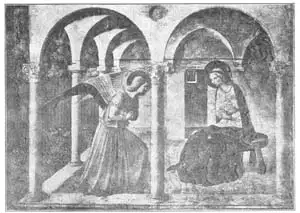
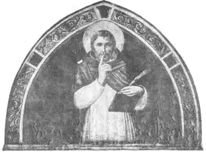

08
THE ANGEL-LIKE BROTHER
天使般的弟兄

THE houses where monks lived together are called monasteries. The monks are known as “brothers” because they are supposed to treat one another and every one else like brothers. In some churches the members call one another brother and sister.
In Florence, the City of Flowers, was a monastery called St. Mark’s, for the Apostle who wrote the second book of the New Testament. In this monastery of St. Mark’s lived a monk who, because he was so very good and holy, was called the Angel-like Brother. In his language, which was Italian, Brother Angel-like was Fra Angelico. It may seem strange that a monk should become a great artist, but Fra Angelico had a talent for drawing and painting and he painted Bible pictures on the walls of the rooms in his monastery.
The rooms where the monks slept were called cells because they were so plain and bare that they were almost like cells in a prison. There were forty of these cells and Fra Angelico spent most of his life in painting them so that the monks would have scenes from the Bible to look at and think about. These pictures were painted in fresco, of course. Besides these, Fra Angelico painted movable pictures on wooden panels in tempera, which, as I have told you, was color mixed with something sticky, like egg or glue.
Fra Angelico lived about a hundred years later than Giotto, but his style was very much like Giotto’s style. It is said that always before starting to paint a picture, he prayed long and earnestly. Then when he did set to work on a painting, he never changed a brush stroke, but left everything he did just as he first put it down. For he believed that the Lord had guided his hand, and that therefore no correction should be made. Of course, being such a religious man, he painted nothing but religious pictures—pictures of saints and angels—and he received no pay whatever for his work.
There was one religious subject that painters of that time loved to paint. It is called the Annunciation. You remember the Bible says that an angel came to the Virgin Mary and told her that she was to have a Son who was to be Christ the Lord. This is called the Annunciation—that is, the announcement to Mary that she was to be the mother of the Lord. Fra Angelico painted an Annunciation which, I think, you’ll agree is very sweet and lovely. In this picture, the Virgin Mary is seated on a stool on the porch of her home, with her arms folded across her breast. An angel messenger who has just descended from heaven, half kneels to tell Mary that she is to have a Divine Son.

No.8-1 THE ANNUNCIATION（《天使报喜》） FRA ANGELICO（安哲利科 作）
Curtesy of The University Prints
The monks of St. Mark’s were not allowed to talk to one another except at certain times, as a special treat. They had to keep silent most of the time. Think of keeping silent, for one single day, or even for one hour, if there were any one around to talk to! That rule was made so that the monks might keep their thoughts always on God and religion and not waste their time in gossip or other worthless talk. Over a doorway in St. Mark’s monastery, Fra Angelico painted a picture of Saint Peter with his finger on his lips, to remind the monks that they must be silent.
The monastery of St. Mark has been made a museum for the paintings of Fra Angelico. It now contains most of his movable paintings as well as the fresco paintings on the cell walls. One of these movable paintings now in the St. Mark’s monastery is a picture of the Virgin Mary with the Christ Child. The Virgin Mary is called “My Lady,” and this, in Italian, is Madonna. So such a picture is called a Madonna.
For hundreds of years, thousands of pictures of the Madonna were painted. In fact, every artist painted at least one Madonna and often many Madonnas. Each church had to have one or more Madonnas. And every family that could afford to have any painting at all had a Madonna hanging on the walls, just as every family nowadays usually has at least one Bible in the house.
The Madonna that Fra Angelico painted is in a broad gold frame. Usually the frame of a picture is just a frame—a fence to separate it from the wall and other things on the wall—and has no beauty in itself. But on this particular frame, Fra Angelico painted twelve angels playing different musical instruments. Thousands of colored post cards and other copies of these angels have been made, and you may have one of the pictures in your own house. Have you?

No.8-2 SAINT PETER（《圣彼得》） FRA ANGELICO（安哲利科作）
【中文阅读】
修士们住的房子叫做修道院。修士们像兄弟一样对待彼此和他人，所以就称为“弟兄”。有些教会的会员互称弟兄姊妹。
在有“花都”之称的佛罗伦萨，有一座名叫圣马可的修道院。它是为了纪念编写《圣经·新约》第二卷的使徒马可而建的。这个修道院里有一位修士非常善良和圣洁，大家都叫他“天使般的兄弟”。他名字的意大利语是弗拉•安哲利科。奇怪的是，这个修士竟然能成为伟大的艺术家，但安哲利科的确有画画的天赋。圣马可修道院内墙上的《圣经》图画都是他画的。
修士睡觉的房间叫做单人小室，每间房都非常简陋，差不多像牢房。修道院共有四十个这样的小间。安哲利科一生绝大多数时间都在房内墙壁上画画，这样，所有的修士便可以看着《圣经》场景，进行思考。当然，这些画都是湿壁画。除了这些，安 哲利科还在可移动的木板上画蛋彩画，这就像我说的那样，把颜料和蛋清或胶水一样黏性的东西混合在一起。
尽管安哲利科比乔托晚出生一百年左右，但他的绘画风格跟乔托的十分相似。据说，他在画画前总要虔诚地祈祷很长时间。然后，当他真正着手画时，他绝不变换笔法，而将要画的内容按起初的决定从头到尾一气呵成。因为他相信上帝牵着他的手在画画，因此没有必要做修改。当然，作为这样一个虔诚人，他只画宗教题材的画——画圣徒和天使——而且他无论做什么，从不索取回报。
那个时代的画家都喜欢画一种叫“天使报喜”的宗教主题。你还记得吗？《圣经》说，有个天使来到圣母玛利亚面前报喜，说她要怀孕生子，就是主基督。这就是“天使报喜”故事——也就是天使宣告玛利亚要做主之母。你要是看到安哲利科画的《天使报喜》，我想你肯定也会认为这幅画非常甜美可爱。画中，圣母玛利亚坐在家中门廊的圆凳上，双手抱在胸前。报信天使从天而降，半跪在地，告诉玛利亚她将生下圣子。
除了在某些时候作为特殊优待，圣马可的修士们是不允许相互交谈的。他们大部分时间都保持缄默。要是让你一天，哪怕一个小时保持沉默，不与身边的任何人讲话！试想一下，那是什么滋味？制定这个规则，是要修士们一心向着上帝和教义，而不把时间浪费在流言蜚语和空谈上。安哲利科在圣马可修道院某门道上方画了一幅圣彼得画像，画中圣彼得把手指放在嘴唇上，提醒修士们要保持安静。
圣马可修道院现在已经成了安哲利科绘画作品的博物馆。它里面收藏了安哲利科大部分可移动的画作，还有单人小室墙壁上的湿壁画，其中有幅可移动的画作，画的是圣母玛利亚怀抱着婴孩基督。圣母玛利亚被称为“我的夫人”，意大利语的意思是圣母。所以这画就叫做圣母像。
在后来的几百年内，人们画了成千上万幅圣母像。差不多每个画家都至少画过一幅圣母像，而常常一画就是好几幅。每座教堂必须有一幅或多幅圣母像。凡能买得起画的家庭，家里墙壁上都挂着一幅圣母像，就像现在每个家庭都至少有一本《圣经》一样。
安哲利科画的圣母像装裱在一个金边大框里。通常，画框只是一个边框——把图画和墙壁以及墙上的其他东西隔离开来，它本身并无美感。但是安哲利科在这个特殊的画框上画了十二个天使，每个天使都在弹奏不同的乐器。后来人们根据这些天使像制作了许许多多彩色明信片和其他复制图片。你们家可能就有一张，对吧？